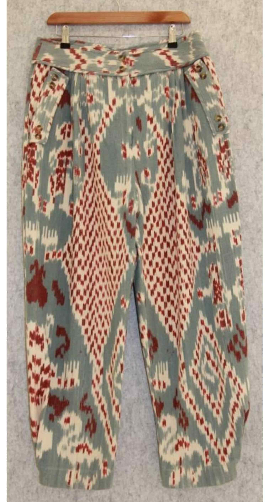

Responsible Wool Bottoms
Women Responsible Wool Pant Manufacturer
Cyncho helps brands develop women responsible wool pants with clearer material planning, tailored trouser development, private label support and production coordination in China.
Get Free Quote
Women Responsible Wool Pant Manufacturer Capabilities
Cyncho supports wool and wool-blend trouser development for brands that need responsible material direction, tailored fit review and dependable production communication. The goal is to help buyers translate premium bottom concepts into production-ready garments with better sourcing clarity.
Our team can help clarify fabric composition, hand feel, shrinkage expectations, lining direction, labeling, packaging and target market requirements before moving into sampling and bulk production.
Responsible Wool Pant Production Notes
Women responsible wool pants usually require stronger control around fit, drape, warmth, pilling risk, seam stability and final pressing. Buyers also benefit from discussing Responsible Wool Standard-related expectations, trim compatibility and care labeling early in the process.
This page is suitable for premium brands, sustainable labels, retailers, wholesalers and private label buyers developing wool tailored trousers, wide-leg wool pants and refined seasonal bottoms in China.
Material Direction
Review wool or wool-blend composition, hand feel, recovery, pilling behavior and RWS-related sourcing expectations.
Sampling and Fit Review
Develop tailored pant samples with waistband, rise, leg shape, lining and crease details checked before bulk production.
Bulk Production Support
Coordinate labels, trims, packaging, quality checkpoints and export communication for premium trouser programs.
Responsible Wool Trouser Details
- Fabric composition, hand feel, warmth and drape expectations.
- Waist, hip, rise, inseam and leg opening measurements.
- Lining needs, crease retention, waistband structure and pocket details.
- Pilling, shrinkage, pressing quality and care-label planning.
How the Process Works
- Share trouser references, quantity, size range, wool composition targets and target market.
- Cyncho reviews sourcing feasibility, sampling expectations, MOQ and production timing.
- Samples are developed and revised before bulk production, with fit, measurements, fabric behavior and trims checked.
- After sample approval, bulk production is coordinated with quality control checkpoints, labeling and packaging details.
Best Fit for Buyers
This page is suitable for premium brands, sustainable labels, retailers, wholesalers and private label buyers comparing responsible wool trouser manufacturers in China.
Target markets include the United States, United Kingdom, Europe and Australia. Cyncho supports B2B buyers looking for refined wool bottom development and production support.
Related Cyncho Pages
Compare related services and product pages before sending your inquiry: women pants manufacturer, women organic cotton tailored pant manufacturer, knitwear manufacturer, private label clothing manufacturer, sustainable clothing manufacturer and certifications. For collection planning, review modern tailoring for womenswear brands.
Frequently Asked Questions
Can Cyncho support women responsible wool pants?
Yes. Cyncho can support women responsible wool pants depending on wool or wool-blend availability, construction details, certification expectations and MOQ.
Can buyers discuss RWS-related expectations early?
Yes. Buyers can discuss Responsible Wool Standard-related expectations early so material sourcing, trims, labels and production communication are more aligned.
What buyers is this page best for?
This page is useful for premium brands, sustainable brands, retailers, wholesalers and private label buyers comparing responsible wool trouser manufacturers in China.
Request Factory Quote
Send your responsible wool trouser details, quantity, fabric needs and target market. Cyncho will help review sampling, sourcing and production options.
Contact Manufacturer